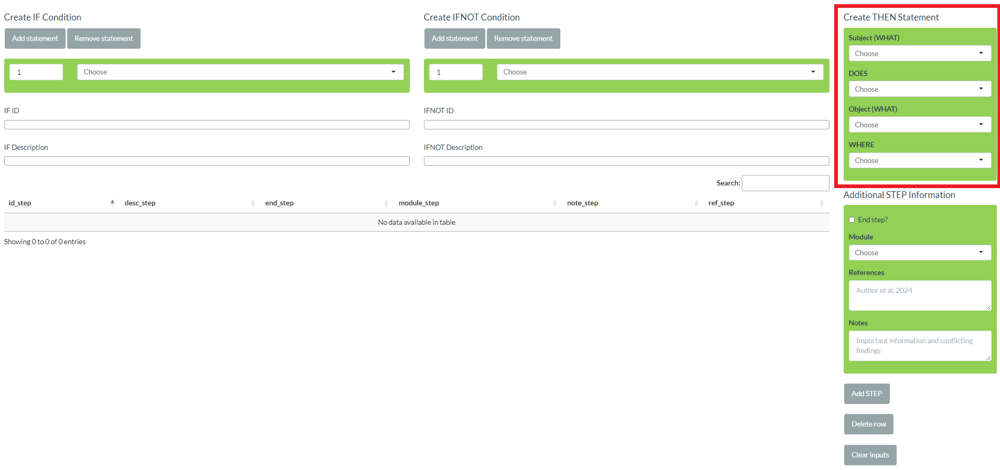

Steplist Creator Tutorial
Source:vignettes/articles/steplist_creator_tutorial.Rmd
steplist_creator_tutorial.RmdIn this article, we’ll show you how to use the Steplist
Creator Shiny App. Ideally, you have RStudio open
and epicmodel installed so you can click along with the
tutorial. To learn more about steplists, see
vignette("steplist").
A first look at the app
Before creating a steplist, let’s look at the app first. There are 9 elements, i.e., tabs, in the menu at the top. Here’s a short description:
- START: Upload and download data
- WHAT: Create and manage WHAT segments
- DOES: Create and manage DOES segments
- WHERE: Create and manage WHERE segments
- MODULE: Create and manage modules
- STEP: Create and manage steps
- ICC: Define incompatible component causes
- OUTCOME: Define outcome definitions
- THEN: Create and manage THEN statements
All tabs (apart from START) contain basically the same
elements:
- Input fields: When creating new entries, the information is entered in the input fields. Input fields always have a green background.
- Action buttons: Buttons for adding and deleting entries as well as for clearing, i.e., returning the input fields to their defaults
- Table: A table that contains all current entries in a certain tab. Tables can be searched by typing into the search field at the top right of the table. Elements in a table can be edited by double-clicking the corresponding cell. Cells that are automatically filled cannot be edited. These cells are all IDs as well as descriptions of steps and THEN segments. Since tables in tabs ICC and OUTCOME re-use step IDs and descriptions, they cannot be edited at all.
IDs
IDs are automatically created by the app and follow a pre-defined form:
- WHAT (id_what): a1, a2, a3, etc.
- DOES (id_does): d1, d2, d3, etc.
- WHERE (id_where): e1, e2, e3, etc.
- MODULE (id_module): m1, m2, m3, etc.
- ICC (id_icc): i1, i2, i3, etc.
- THEN (id_then): Combinations of the segment IDs that together form
the THEN statement following the
WHAT DOES WHAT WHEREstructure, e.g.,a1d2e1,d4a67,a2d3a8. If THEN objects are used, the object ID is put into(), e.g.,a1d1(a1d2e1)e1. - STEP (id_step): Combinations of the IDs of THEN statements, the keys
IF,IFNOT, andTHEN, as well as additional characters indicating AND/OR logic - OUTCOME (id_outc): Combinations of IDs of THEN statements and additional characters indicating AND logic
Descriptions
Descriptions are partly provided by the user and partly created automatically. Descriptions in tabs WHAT, DOES, WHERE, and MODULE need to be provided. Descriptions in tabs STEP and THEN are created automatically. Automatically created descriptions should not completely neglect English grammar. Therefore, WHAT and DOES need to provide slightly more information. Let’s take a detailed look at the corresponding fields.
Keywords (key_what, key_does, key_where, key_module): All 4 tabs (WHAT, DOES, WHERE, MODULE) need a keyword, which is a very short description. In tabs STEP and THEN, you will later select from these 4 tables with drop-down menus. Keywords are the descriptors that appear in these drop-down menus. Therefore, keywords should be concise but descriptive enough to be easily identifiable. For modules, the keyword is also used in output, e.g., when printing a SCC model.
Segment descriptions (desc_what, desc_where): They are, in general, longer than keywords and used in automatically created descriptions of THEN statements and steps.
WHAT plural indicator (plural_what): Since DOES segments essentially act as verbs in a sentence, their form depends on the sentence’s subject. Following the
WHAT DOES WHAT WHEREstructure, the subject is the first WHAT segment. Therefore, WHAT segments need to declare if they are singular or plural. In the app, this is done via a checkbox on tab WHAT. In the table, singular translates toplural_what == 0and plural translates toplural_what == 1.DOES descriptions (subject_singular_does, subject_plural_does, no_subject_does): If a subject is used that has
plural_what == 0, the automatically created THEN description usessubject_singular_does. If a subject is used that hasplural_what == 1, the automatically created THEN description usessubject_plural_does. If no subject has been specified, i.e., if the THEN statement starts with the DOES segment,no_subject_doesis used.MODULE description (desc_module): The module description offers you the possibility to describe in more detail, what certain modules refer to, since the keyword needs to be short.
THEN objects (then_object_does): The checkbox in tab DOES determines whether a DOES segment requires a WHAT object (unchecked) or a THEN object (checked). See
vignette("steplist")for an explanation. In the table, WHAT objects translate tothen_object_does == 0and THEN objects translate tothen_object_does == 1.
Additional step information
The STEP tab will be discussed in more detail later using an example. There are, however, three more non-drop-down input fields in STEP:
- End step? (end_step): If the checkbox is checked
(
end_step == 1), the step will be considered for outcome definitions, while steps with unchecked box (end_step == 0) won’t. Accordingly, steps with (end_step == 1) appear in the drop-down-menus in tab OUTCOME, where outcome definitions are created. - References (ref_step): Space for literature references
- Notes (note_step): Space for important information and conflicting findings
ICC and OUTCOME
In tabs ICC and OUTCOME, steps are selected from the drop-down menus. Therefore, all columns in the tables are automatically created.
THEN tab
The THEN tab contains a list of THEN statements. Tab STEP contains
the same input fields as tab THEN and, normally, you will enter THEN
statements while creating steps in tab STEP. When creating a step in tab
STEP, the THEN statement is also entered in the THEN table, which is
visible in tab THEN. This table is the base for drop-down menus with
THEN statements, namely the THEN object as well as drop-downs for
creating IF/IFNOT conditions. You only need to use the THEN tab if you
want to create a step that needs a THEN object, IF/IFNOT condition,
which is not yet available as a step. The THEN tab therefore offers more
flexibility on the order the steps are entered in the app. Please note
that all THEN statements of steps in table STEP must be in table THEN as
well, because some epicmodel functions use it for merging
descriptions to THEN IDs. Only delete from tab THEN, if you also deleted
to corresponding step in tab STEP.
Example
For our example, let’s create a SCC model for outcome “student can create SCC models”. Before we start, please note, that there are different ways of creating the same steplist, e.g., different segment names, different use of WHAT, DOES, and WHERE, etc.
Collect information on mechanism
Before launching the Steplist Creator Shiny App, you
should have already prepared all steps based on the literature, your
assumptions, etc. For this example, we’ll introduce our assumptions
about learning SCC models little by little to make it easier to follow
along.
Based on our knowledge and assumptions, a student’s ability to create SCC models consists of two parts. First, they need background knowledge on SCC models and, second, they need to know how to create them in practice. Let’s start with the background knowledge. Let’s assume they know enough theory about SCC models in one of two scenarios:
- They take the class on SCC models.
- They read the essential literature, e.g., both Rothman’s 1976 paper and Modern Epidemiology (3rd Edition)
Theory: Segments
Now, we need to put this information in the
WHAT DOES WHAT WHERE structure. Remember, that we don’t
have to specify all 4 segments if we don’t need them. Let’s start by
identifying WHAT segments, i.e., people, things, concepts, etc.:
- student
- class on SCC models
- essential literature
- Rothman’s 1976 paper
- Modern Epidemiology (3rd Edition)
- theory
Now, let’s identify DOES segments, which are basically the verbs:
- take
- read
- know
We don’t need any WHERE segments for now.
So let’s put these segments into the app. Let’s start with WHAT segments. Here are the basic tasks:
- Go to tab
WHAT - Type in a new keyword (remember, keywords appear in the drop-down menus)
- Type in a new description (remember, descriptions will later form the actual step descriptions)
- Select if the segment is singular or plural
- Click
Add WHAT segment - Repeat steps 2-5 for every segment
We suggest the following values but make adjustments, if you want to:
| Keyword | Description | Plural? |
|---|---|---|
| student | student | No |
| SCC class | a class on SCC models | No |
| essential literature | essential literature | No |
| Rothman (1976) | Rothman’s 1976 paper | No |
| ME3 | Modern Epidemiology (3rd Edition) | No |
| theory | theory | No |
Also, you can delete entries from the table following these tasks:
- Go to tab
WHAT - Click
Delete row - In the pop-up, type in the ID of the corresponding row, e.g.,
a1, and clickOK
You can delete from the other tables the same way. The WHAT table should now look like this.

Let’s do the same for our DOES segments. Here are the tasks:
- Go to tab
DOES - Type in a new keyword
- Type in the version for subjects in singular
- Type in the version for subjects in plural
- Type in the version for missing subjects, i.e., the version that is used if no subject has been specified
- Select if the segment needs a THEN object
- Click
Add DOES segment - Repeat steps 2-7 for every segment
We suggest the following values but make adjustments, if you want to.
Please note, that we used NA in
no_subject_does because we expect that none of our verbs
will be used without subject. In such a case, we recommend to assign a
placeholder, e.g. NA, instead of leaving it blank. Remember
that, in case you misspell something, you can edit entries by
double-clicking on the corresponding cell.
If you need no_subject_does in one of your projects,
e.g., for DOES segments “exposure” or “intervene”, try the values
“exposure to” or “intervention by”.
| Keyword |
Description Singular |
Description Plural |
Description No subject |
THEN object? |
|---|---|---|---|---|
| take | takes | take | NA | No |
| read | reads | read | NA | No |
| know | knows | know | NA | No |
The table should now look like this:
Modules
Before creating steps, let’s first add some modules. The tasks are
similar to WHAT and DOES segments:
- Go to tab
MODULE - Type in a new keyword (keywords appear in drop-down menus and
epicmodeloutput) - Type in a new description (descriptions are more detailed labels)
- Click
Add Module - Repeat steps 2-4 for every module
We suggest the following modules:
| Keyword | Description |
|---|---|
| theory | theory |
| practice | practice |
The table now looks like this:

STEP tab
Finally, let’s take a closer look at tab STEP. In the bottom left, you can see the table that later will contain the steps. All other elements are just there for getting new entries into this table.

A step contains a THEN segment and potentially IF and/or IFNOT
conditions. THEN statements can be created in the “Create THEN
Statement” block in the top right. The structure follows the
WHAT DOES WHAT WHERE structure. You may see that the
heading of the third drop-down menu is “Object (WHAT)” by default. If
you select a DOES segment with then_object_does == 1 the
drop-down menu will automatically change to “Object (THEN)”.

Below the “Create THEN Statement” block are input fields for additional step information, including the module. Below are the action buttons, which add to and delete from the step table in the bottom left corner. As mentioned, if the THEN statement is not yet in the THEN table in tab THEN, it is added to it when adding the step. Finally, the “Clear inputs” button puts all input fields back to its default values.
Finally, we have the “Create IF Condition” and “Create IFNOT Condition” blocks in the top left. Both are identical in structure. IF and IFNOT conditions are a combination of an unlimited number of THEN statements. By default, one row for the selection of a THEN statement is displayed. By clicking “Add statement”, a new row can be added. Clicking “Remove statement” deletes the last row. If “Remove statement” is clicked when only one row is displayed, it clears the selection back to the default values. Each row consists of a drop-down menu listing all THEN descriptions and of a numeric input. The numeric input indicates the scenario. All statements with the same number are part of the same scenario. All statements within the same scenario are combined with AND, i.e., all of them have to be present in order for the STEP to occur (IF) or not to occur (IFNOT). The different scenarios are combined with OR, i.e., only one scenario has to be fulfilled in order for the STEP to occur (IF) or not to occur (IFNOT). Below, the input rows, there is a preview section for IDs and descriptions.

Theory: Steps
Now, let’s put in the steps we have so far. Let’s start with the component causes, i.e., the steps without IF conditions (there are no interventions in this example).
- student takes a class on SCC models
- student reads Rothman’s 1976 paper
- student reads Modern Epidemiology (3rd Edition)
Here are tasks to enter the first step:
- Go to tab
STEP - Select “student” in drop-down menu “Subject (WHAT)”
- Select “take” in drop-down menu “DOES”
- Select “SCC class” in drop-down menu “Object (WHAT)”
- Select module “theory” in drop-down menu “Module”
- Click the “Add STEP” button
Now, put in the other two steps. The step table should now look like this:

It’s finally time to create our first IF conditions. The following two steps are still missing:
- IF student reads Rothman’s 1976 paper AND student reads Modern Epidemiology (3rd Edition) THEN student reads essential literature
- IF student reads essential literature OR student takes a class on SCC models THEN student knows theory
Here are the tasks for the first step:
- Select “student” in drop-down menu “Subject (WHAT)”
- Select “read” in drop-down menu “DOES”
- Select “essential literature” in drop-down menu “Object (WHAT)”
- Select module “theory” in drop-down menu “Module”
- Since we have two elements in the IF condition, click “Add statement” below “Create IF condition”
- Select “student reads Rothman’s 1976 paper” in the first drop-down below “Create IF condition”
- Select “student reads Modern Epidemiology (3rd Edition)” in the second drop-down below “Create IF condition”
- Look at the “IF ID” and “IF Description” preview
- Click the “Add STEP” button
Here are the tasks for the second step:
- Select “student” in drop-down menu “Subject (WHAT)”
- Select “know” in drop-down menu “DOES”
- Select “theory” in drop-down menu “Object (WHAT)”
- Select module “theory” in drop-down menu “Module”
- Check the box “End step?” because we want to use this step later during outcome definition
- Since we have two elements in the IF condition, click “Add statement” below “Create IF condition”
- Select “student reads essential literature” in the first drop-down below “Create IF condition”
- Select “student takes a class on SCC models” in the second drop-down below “Create IF condition”
- Look at the “IF ID” and “IF Description” preview and you will see that both conditions are combined with AND
- To combine them with OR, change the second number from 1 to 2
- Click the “Add STEP” button

The steps table should now look like this:
A word of caution: If you would now go back and edit the descriptions in tables WHAT, DOES, and WHERE, the step descriptions and THEN statements will not update automatically!
Practice: Assumptions, segments, and steps
Let’s assume they know enough about the practice of SCC model
creation if they read the epicmodel articles on the
homepage and if these articles are good.
Again, let’s identify the segments. We could, e.g., define “on the homepage” as a WHERE segment. We suggest for the WHERE table:
| Keyword | Description |
|---|---|
| homepage | on the homepage |
With what you learned so far, try to put the WHERE segment into the corresponding table. Then try to identify the WHAT and DOES segments yourself. If you’re unsure, you can look at some screenshots at the end of the tutorial.
Next we need to include the steps. First, include the two without IF condition:
- they read the
epicmodelarticles on the homepage - these articles are good
Then, include the one with the IF condition:
- if they read the
epicmodelarticles on the homepage and if these articles are good then they know enough about the practice of SCC model creation
Again, you can find a screenshot with our solution at the and of the article.
Outcome definition
Finally, let’s specify the outcome definition. Tab OUTCOME works very
similar to how you specify IF/IFNOT conditions. You can, e.g., add and
remove statements with buttons “Add statement” and “Remove statement”.
However, you can only select from a subset of steps and the numbers,
which represent the scenarios, are missing. When creating the outcome
definition, you can only choose from end steps, i.e., those steps, for
which you specified end_step == 1 in the step table in tab
STEP. Regarding scenarios, they still exist but are specified
differently. Every line in the outcome definitions table is in fact it’s
own scenario. This means that all end steps you specify together are
combined with AND logic in one line. And all lines are combined with OR
logic. We have only a single scenario in our outcome definition and,
therefore, we only need a single line. Here are the tasks to specify
outcome definition “student knows theory and student knows
practice”:
- Go to tab
OUTCOME - Click on “Add statement” to add a second line
- Select “student knows theory” in the first drop-down
- Select “student knows practice” in the second drop-down
- Click “Add outcome definition”


As an exercise, try to specify an alternative outcome definition: “student knows theory OR student knows practice”. You can again find the solution at the end of this article.
Save steplist
As your final action, you want to download the steplist. If you would close the app now, your progress would be lost. Here are the tasks:
- Go to tab
START - Click on “Download Steplist”
- Select the folder and save it
- Back in R, you can load it with
readRDS()
Also, if you want to continue creating your steplist at another day, save it as described and conduct the following tasks:
- Start a new session
- Launch app
- Stay on tab
START - Click on “Upload Steplist”
- Select your previously saved steplist from the folder